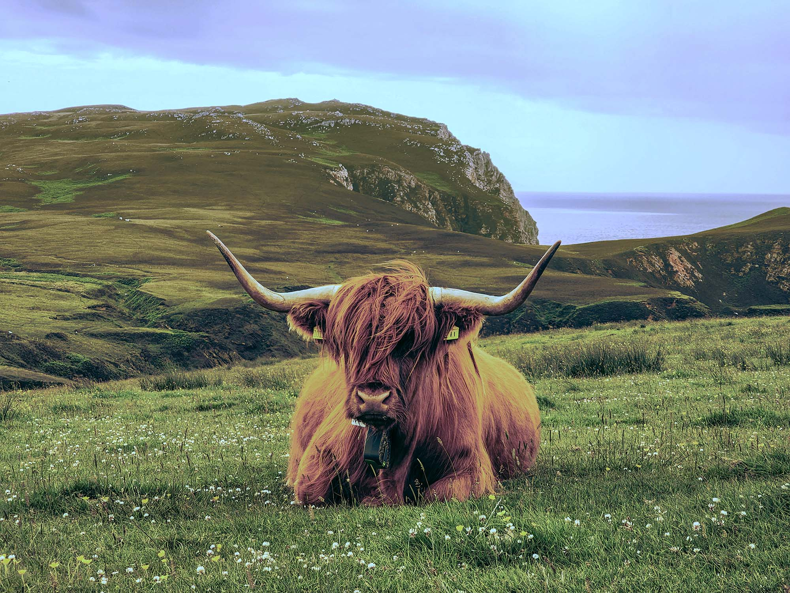

Bild 1


I bild ett har jag gjort färgtemperaturen kallare, vilket var det enskilt mest altererande attributet. Jag ökade ljusstyrkan en del och kontrasten marginellt. Färgbalansen i högdagrarna fick mer emfas av cyan och blått så att himlen skulle bli klarare. I mellantonerna ökade jag det röda marginellt och det gula markant för att få kossan, örontaggarna och blommorna att synas bättre. Mer cyan i skuggorna gjorde att det vita i bergen kom fram tydligare. Nyanserna i färgerna behölls sedan oförändrade men jag drog ner mättnaden och ljusheten i dom. Jag nyttjade allt som allt fem separata lager i Photoshop, det var hue/saturation, color and vibrance, brightness/contrast, clarity and dehaze samt color balance. Sedan storleksändrade jag bilden från 4000x3000px till 2000x1500px och komprimerade den från 15,4mb till 580,5kb.